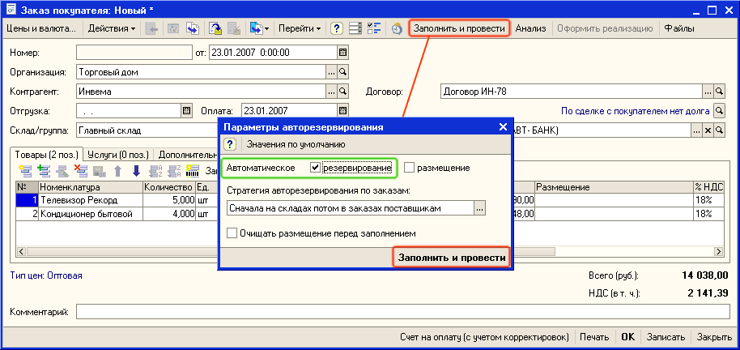

Для выставления счета покупателю товаров и получения печатной формы счета (для предоставления покупателю) используется документ Заказ покупателя.
Примечание.
Для выставления счета на оплату можно также использовать документ Счет на оплату покупателю. Счет на оплату покупателю оформляется только в том случае, если отгрузку номенклатуры предполагается производить из текущего остатка на складах без предварительного резервирования и без оперативного контроля оплаты по счету. Процесс оформления документа Счет на оплату покупателю аналогичен процессу оформления документа Заказ покупателя.
Откройте список документов Заказ покупателя.
Для этого в меню Документы выберите пункт Продажа, а в нем — подпункт Заказы покупателей. Создайте новый документ Заказ покупателя с помощью нажатия кнопки  (или нажмите клавишу Insert или выберите меню Действия — Добавить). Заполните реквизиты документа значениями так, как показано на рисунке:
(или нажмите клавишу Insert или выберите меню Действия — Добавить). Заполните реквизиты документа значениями так, как показано на рисунке:
2. Информация об организации и складе заполняется из настроек пользователя по умолчанию. При необходимости эти значения в документе можно изменить.
3. Выбор покупателя производится выбором из списка Контрагенты при нажатии на кнопку  . Для быстрого заполнения информации о покупателе можно использовать быстрый выбор путем набора первых букв наименования (Инв) или ИНН (7703121355) покупателя. После выбора покупателя для него автоматически заполняется информация об основном договоре и о тех ценах, которые ему назначены.
. Для быстрого заполнения информации о покупателе можно использовать быстрый выбор путем набора первых букв наименования (Инв) или ИНН (7703121355) покупателя. После выбора покупателя для него автоматически заполняется информация об основном договоре и о тех ценах, которые ему назначены.
4. Для указания расчетного счета, на который покупатель должен перевести денежные средства, нажмите на кнопку Б/счет, касса. В появившемся списке выберите Банковский счет, откроется список банковских счетов предприятия. С помощью кнопки ENTER (или Действия -Выбрать или двойного клика мыши) выберите нужный счет из списка банковских счетов, как это показано на рисунке.
5. Для быстрого подбора товаров в документ используйте кнопку Подбор. Для того, чтобы в документ подбирать только те позиции, которые есть в наличии на складе в диалоговом окне подбора установите режим По остаткам номенклатуры, так как это показано на рисунке. При подборе товаров используйте быстрый поиск номенклатуры и запрос количества товаров.
Примечание. Обратите внимание, что при подборе товаров для товара Телевизор Рекорд установилась автоматическая скидка, равная 5% (97,5 рублей по каждому товару). Это произошло потому, что общая сумма товаров по документу превысило установленный порог - 5000 рублей. Информацию о том, почему была предоставлена автоматическая скидка можно посмотреть на закладке Автоматические скидки.
6. Зарезервируем товары для данного покупателя из текущих остатков на складе. Для этого в документе нажмите на кнопку Заполнить и провести. В открывшемся диалоговом окне установите флаг Автоматическое резервирование и нажмите на кнопку Заполнить и провести.

При нажатии на кнопку будет выдано предупреждение:

7. Выберите ответ Да. Документ будет проведен, товар будет зарезервирован. На каком складе будет зарезервирован товар будет указано в графе Размещение.
8. Для получения печатной формы счета нажмите на стрелку выбора на кнопке  в нижней части формы документа и выберите печатную форму Счет на оплату (с учетом корректировок) .
в нижней части формы документа и выберите печатную форму Счет на оплату (с учетом корректировок) .
Эту форму можно установить в качестве печатной формы по умолчанию (Кнопка По умолчанию). После установки печатной формы по умолчанию при печати следующего счета можно будет использовать кнопку Счет на оплату (с учетом корректировок) в форме счета, не открывая диалог печати.

Печатную форму счета можно распечатать , нажав на кнопку  в главном меню программы или отправить по электронной почте, нажав на кнопку
в главном меню программы или отправить по электронной почте, нажав на кнопку в форме счета.
Только что Вы научились выставлять покупателю счет на оплату.
Из следующего раздела Вы узнаете, как оформить поступление денежных средств от покупателя на расчетный счет.
Следующий раздел: «Поступление денежных средств от покупателя на расчетный счет»